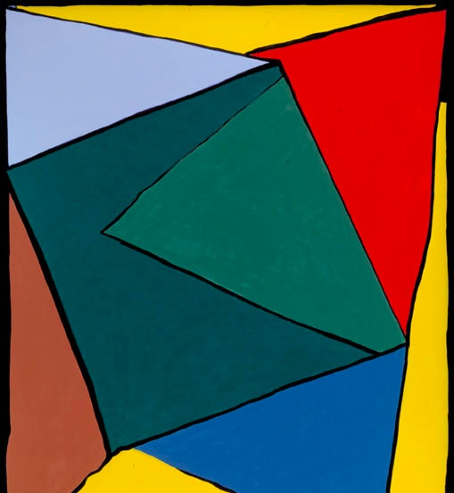

Danish painter, 1910-1993, known for geometric abstraction. Rubello's teacher at the Royal Danish Academy of Fine Arts from 1963-66. His mantra, according to Rubello, was "Line, form, color."
Rubello and two fellow artists appeared on a Danish TV program while they were in school, co-creating a messy, black-and-white @link[http://en.wikipedia.org/wiki/Action_painting, action painting. The next day, Rubello remembers that Mortensen, an "expansive, emotional guy," was irate. "That just wasn't the way he wanted us to paint." See IRRATIONAL.